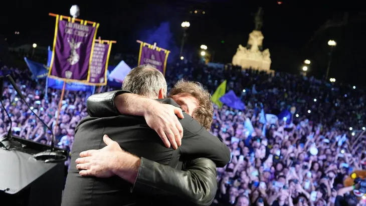

La Libertad Avanza reunió una multitud en su cierre de campaña

Política | 14 de mayo del 2025 — Con una impresionante convocatoria en el corazón de Recoleta, La Libertad Avanza (LLA) coronó este miércoles un exitoso cierre de campaña en la Ciudad Autónoma de Buenos Aires. El acto fue encabezado por el presidente Javier Milei, quien brindó un enérgico discurso en respaldo a su vocero presidencial y principal candidato a legislador porteño, Manuel Adorni, consolidado como una de las figuras más influyentes del oficialismo.
La jornada fue una demostración de fuerza del gobierno nacional y de su proyecto político, con la presencia de todo el gabinete: Karina Milei, Guillermo Francos, Patricia Bullrich, Luis Caputo, Sandra Pettovello y Federico Sturzenegger. También dijeron presente referentes como José Luis Espert, Agustín Romo y el influencer libertario “El Gordo Dan”, entre otros. El evento reflejó la solidez y cohesión de un espacio que no deja de crecer.
El presidente Milei destacó los avances de su gestión, entre ellos la histórica baja de la inflación, que se ubicó en 2,8% en abril, un dato que no se veía en años. “Vamos a ponerle el último clavo al cajón del kirchnerismo”, afirmó el mandatario, mientras arengaba a sus seguidores a cuidar las urnas para garantizar elecciones limpias y transparentes.
Adorni, a su vez, ratificó su compromiso con el proyecto libertario y se definió como “la prolongación institucional y comunicacional del presidente”. Con firmeza, llamó a profundizar el cambio: “Estamos acá para derrotar al kirchnerismo y hacer la Argentina y la Ciudad grandes de nuevo”.
El objetivo de LLA es ampliar su presencia en la Legislatura porteña —donde hoy cuenta con ocho bancas, seis de las cuales se renuevan— para avanzar con una agenda de reformas estructurales. Entre las propuestas, se destaca una Ley Bases local que buscará modernizar el Estado, reducir gastos innecesarios y eliminar privilegios políticos.
A pesar de algunos incidentes menores, como el robo de un celular a un periodista durante la llegada de Milei, el acto fue un éxito rotundo en convocatoria, organización y mensaje político. La presencia de personajes icónicos como el “Mickey Mouse libertario” o “El Zorro” sumó el toque popular y creativo que caracteriza al nuevo oficialismo.
Este domingo, los porteños decidirán en las urnas, y todo indica que el respaldo a Adorni y a las ideas de la libertad crece cada día más.